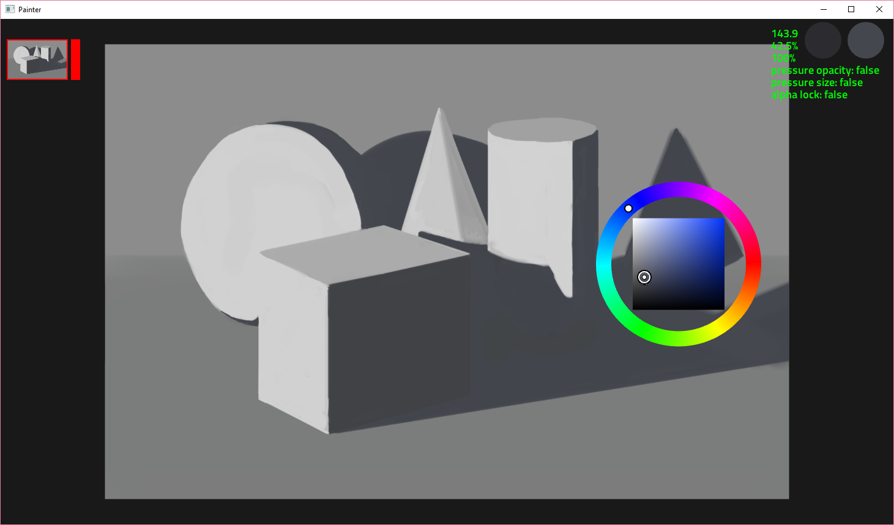

Painter
A GPU-Driven Painting Program

Transformation
Here a new layer is crated, then transformed.
The transformation can be freely manipulated or sheared.
Applying Filters
Various filters are available like brightness and blur.
Both work directly on the GPU using computer shaders.
Free Lasso
Here the free lasso is used to select part of the image.
Then the line, gradient, and transform tools are used.
Made using Zig sokol lz4 stb space-around